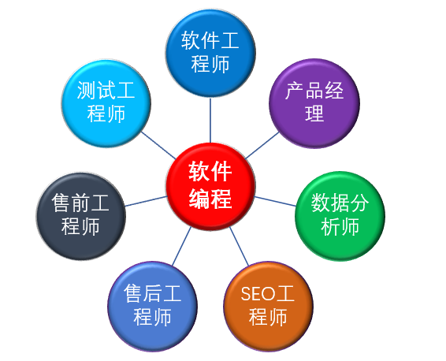

2019-09-18 00:00:00104
一、快乐学习、快乐工作是我们追求的目标
当今社会，大学不能就业或就不好业，已经是不争的事实。上大学目的是获得好的教育，获得未来的社会交际网，更想获得更好的就业岗位，改善生活，提升自我。 未来的大学生想获得是适合自已的工作，适合自已个性的职业，“开心工作”是多少人的追求，多少人的梦想，“开心工作”可以促进企业活力、促进社会的良性发展。
当前现实是大学生在毕业的最后一年，二次加入培训学校学习，希望通过社会的培训，培养自已的一技之长。获得社会的尊重，改善生活，一直是他们心中的梦想。诚然，有太多的人获得了他们的工作，所谓的职业。但进一步静下来想想，您喜欢这份工作吗？这份工作适合你吗？为了生活，改变自已的个性，值得吗？
有多少人不喜欢软件编程，但硬着头皮，去做编程，有多少人不喜欢设计而选择设计。但他们别无选择，为了生活，放弃了自我。
悟空智慧教育推出了定制教育的理念，根据每个人的性格，定制您的未来的发展方向，让每个人快乐学习、快乐工作是我们追求的目标。
“职业之路千万条,个人战略第一条”，这是我们的立足之本，也是每个人的立足之本，以人为出发点，才是真正的教育。
二、何为定制教育？
“万丈高楼平地起”，高楼需要打好地基，在此基础上可以建平房、可以建高楼，同样可以建别墅。“万物同理，殊途同归”，学习也是一样，需要打好基础。 根据行业特性，分析每个人的性格特点，制定学习计划。
软件行业为软件编程为基础，根据个性进行人员定位
（1） 性格沉稳，喜欢钻研者。培养其成为软件工程师，根据特点深入学习，更上一层楼。
（2） 性格活跃、喜欢交流者。可以培养售前工程师，会建立良好的沟通氛围，促进个人能力提升，促进企业发展。
（3） 喜欢写作，喜欢分析。可以培训数据分析师，大数据发展至今，需要大量数据分析人员，数据分析可以促进产品的更新，促进企业更好的定位。
（4） 思维严谨，喜欢创新，可以培养产品经理，产品的发行将给他带来成就感和快乐。
三、悟空智慧的教学形式
通过线上及线线下教学，同时建立视频网站，建立远程人与人的沟通，并逐渐完善体系。
教学理念，以学员角度出发“立足当下，着眼未来”，为每个人打造适合自已人生发展之路。让您“快乐学习、快乐工作”是我们追求的最高目标。